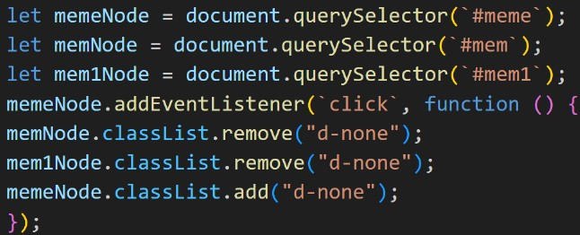

Cкрипт – это набор команд, прописанных в коде, которые необходимы для выполнения задачи. Именно скрипты делают так, что действия на сайте работают по заданному сценарию. К примеру, если пользователь на вашем сайте нажмет кнопку “Заказать”, а скриптов нет, то ничего не произойдет. Скрипты могут быть как небольшими, выполняя простые задачи, так и объемными, которые анализируют данные и представляют готовый результат на сайте. Сам скрипт обычно размещается в текстовом файле, поэтому его легко редактировать.
- Посетитель сайта совершает действие
- Информация поступает на сервер
- На сервере происходит запуск файла скрипта и обработка
- Выбирается нужный ответ по сценарию
- Информация с сервера возвращается на устройства пользователя, совершается ответное действие
Условно принцип работы скрипта выглядит следующим образом:
Скрипты используют для продвижения и улучшения качества сайта (его внешнего вида, юзабилити и т.д).
- Для SEO-продвижения. Скрипты помогают автоматизировать многие действия для успешного продвижения, что существенно снижает нагрузку на живого специалиста.
- Для сбора статистики. С помощью скриптов можно узнать количество посетивших ваш сайт и их действия на нем.
- Для добавления информации без перезагрузки страницы. Например, когда вы нажимаете кнопку “Показать больше”, то данные автоматически подтягиваются, без необходимости обновлять страницу.
- Для увеличения функционала сайта и добавления элементов дизайна. Можно добавить анимацию на сайт и другие составляющие.
Зачем нужны скрипты:
- Общие. С их помощью можно создать любое программное обеспечение. Примеры: Java, Python, Bash.
- Универсальные. Используются для программирования сайтов. Примеры: JavaScript, PHP, Python.
- Узкоспециализированные. Используются для узких задач. Примеры: NQC, Autocad
Какие бывают языки скриптов:
Помните эту кнопку?
Так вот для неё скрипт, при помощи которого картинка была скрыта:
